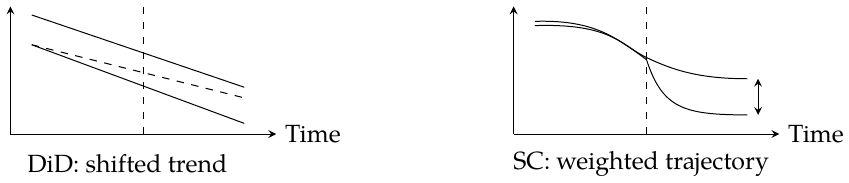
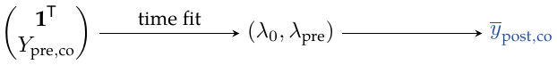
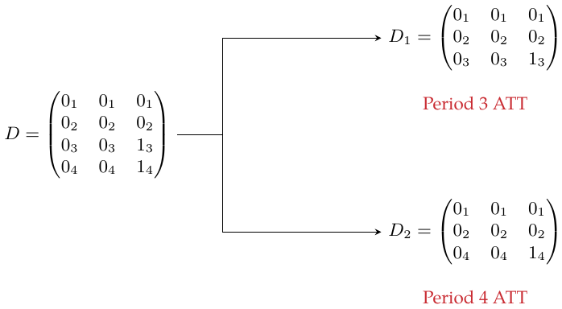
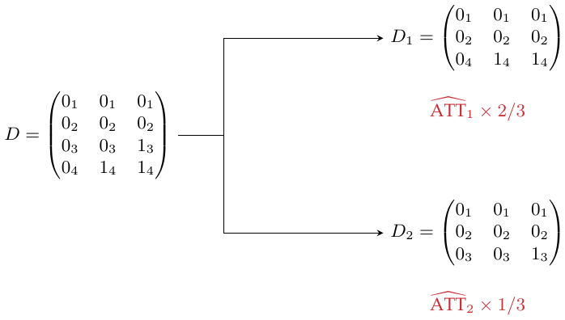
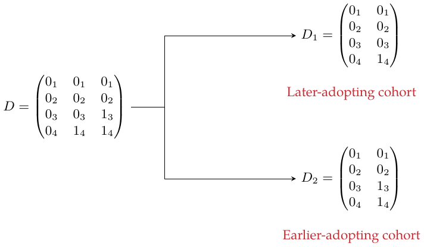

Chapter 25: Synthetic Difference-in-Differences
Representing panel data
Observe multiple units over multiple periods. In \(D\), rows are times and columns are units: \[D=\begin{pmatrix}0&0&0&\cdots&0&0\\0&0&0&\cdots&0&0\\\vdots&\vdots&\vdots&&\vdots&\vdots\\0&0&0&\cdots&1&1\\0&0&0&\cdots&1&1\end{pmatrix}.\]
Columns containing ones after adoption \(\textcolor{black}{\longrightarrow}\) Treated units
Absorbing treatment: once a unit is treated, it does not return to the untreated state. The four-block form here also uses a common pre/post split for the treated units. These are design restrictions; causal identification still requires assumptions about the untreated outcomes. Staggered adoption is handled later through subpanels.
Representation 1: synthetic control.
Group the observations into four blocks: \[D=\begin{pmatrix}0&0\\0&1\end{pmatrix},\qquad Y=\begin{pmatrix}Y_{\mathrm{pre,co}}&Y_{\mathrm{pre,tr}}\\Y_{\mathrm{post,co}}&Y_{\mathrm{post,tr}}\end{pmatrix}.\] Here pre/post means before/after treatment, and co/tr means control/treated.
Representation 2: DiD.
Use a long table with columns for unit, time, outcome, treatment-group membership, and whether treatment has already begun.
The observed blocks and the missing counterfactual are \[Y=\begin{pmatrix}Y(0)_{\mathrm{pre,co}}&Y(0)_{\mathrm{pre,tr}}\\Y(0)_{\mathrm{post,co}}&Y(1)_{\mathrm{post,tr}}\end{pmatrix}, \qquad \operatorname{ATT}=\overline Y(1)_{\mathrm{post,tr}}-\underbrace{\overline Y(0)_{\mathrm{post,tr}}}_{\text{counterfactual}}.\] Bars average over the treated post-treatment cells.
Revisiting DiD and synthetic controls
The DiD regression and its parallel-trends restriction are \[Y_{it}=\beta_0+\beta_1\mathrm{Post}_t+\beta_2\mathrm{Treated}_i +\beta_3\mathrm{Treated}_i\mathrm{Post}_t+e_{it},\] \[E[Y(0)_{\mathrm{post,co}}-Y(0)_{\mathrm{pre,co}}] =E[Y(0)_{\mathrm{post,tr}}-Y(0)_{\mathrm{pre,tr}}].\] Without treatment, the two groups would have the same average change.
\(\widehat\tau^{\mathrm{did}}\) is the treatment coefficient minimizing \[\min_{\mu,\alpha,\beta,\tau}\sum_{i=1}^N\sum_{t=1}^T [Y_{it}-(\textcolor{blue}{\mu+\alpha_i}+\beta_t+\tau D_{it})]^2.\] \[\begin{aligned} \widetilde Y_{it}&=Y_{it}-\overline Y_{i\cdot}-\overline Y_{\cdot t}+\overline Y_{\cdot\cdot},\\ \widetilde D_{it}&=D_{it}-\overline D_{i\cdot}-\overline D_{\cdot t}+\overline D_{\cdot\cdot}. \end{aligned}\]
Demeaning \(Y\) and \(D\) in a balanced panel \(\textcolor{black}{\longrightarrow}\) The fixed-effects least-squares criterion.
This resembles synthetic control, but lacks the weights.
For synthetic control, fit weights before treatment: \[\widehat w^{\mathrm{sc}}=\operatorname*{argmin}_{w_{\mathrm{co}}} \|\overline y_{\textcolor{blue}{\mathrm{pre,tr}}}-Y_{\mathrm{pre,co}}w_{\mathrm{co}}\|_2^2, \quad \sum_{i\in\mathrm{co}}w_i=1,\quad w_i\ge0.\] \(Y_{\mathrm{pre,co}}\) is \(T_{\mathrm{pre}}\times N_{\mathrm{co}}\): rows are times, columns are units. \(w_{\mathrm{co}}\) is \(N_{\mathrm{co}}\times1\). Each entry of \(\overline y_{\mathrm{pre,tr}}\) averages treated units at one pre-treatment time. Fit a synthetic control to the treated group: this is similar to linear regression. Zero donor weights are allowed.
After treatment, use the weighted controls to predict the missing outcome, and average the post-treatment gaps. The corresponding SC regression criterion is also shown: \[\widehat Y(0)_{\mathrm{post,tr}}=Y_{\mathrm{post,co}}\widehat w^{\mathrm{sc}}_{\mathrm{co}},\qquad \widehat{\operatorname{ATT}}=\operatorname{average}_{t\in\mathrm{post}} [\overline y_{t,\mathrm{tr}}-\widehat Y(0)_{t,\mathrm{tr}}].\] \[\min_{\beta,\tau}\sum_{i=1}^N\sum_{t=1}^T [Y_{it}-(\beta_t+\tau D_{it})]^2\widehat w_i^{\mathrm{sc}}, \qquad \widehat w_i^{\mathrm{sc}}=1/N_{\mathrm{tr}}\quad(i\in\mathrm{tr}).\] Unlike DiD, this criterion has neither an overall intercept \(\mu\) nor unit fixed effects \(\alpha_i\). Interpreting the gap causally requires the synthetic comparison to remain valid for untreated post-treatment outcomes; close pre-treatment fit alone does not guarantee that.
How I picture the comparison.
In the first sketch, extending the control trend in parallel overstates the effect in this particular example. In the second, pre-treatment weights form a synthetic untreated version of the treatment group; apply those weights after treatment and compare the two averages.

Combining the two: synthetic DiD
\(\star\) Compare the two ingredients: \[\begin{array}{ll} \mathrm{SC}:&\displaystyle\min_{\beta,\tau}\sum_{i,t}[Y_{it}-(\beta_t+\tau D_{it})]^2\widehat w_i^{\mathrm{sc}},\\[2mm] \mathrm{DiD}:&\displaystyle\min_{\mu,\alpha,\beta,\tau}\sum_{i,t}[Y_{it}-(\mu+\alpha_i+\beta_t+\tau D_{it})]^2. \end{array}\]
SC weights and DiD fixed effects \(\textcolor{black}{\longrightarrow}\) Combine them, adding time weights.
\(\widehat\tau^{\mathrm{sdid}}\) is the treatment coefficient minimizing \[\min_{\mu,\alpha,\beta,\tau}\sum_{i=1}^N\sum_{t=1}^T [Y_{it}-(\mu+\alpha_i+\beta_t+\tau D_{it})]^2 \underbrace{\widehat w_i^{\mathrm{sdid}}}_{\textcolor{red}{\text{unit weight}}} \underbrace{\widehat\lambda_t^{\mathrm{sdid}}}_{\textcolor{red}{\text{time weight}}}.\]
Time weights.
Fit the controls’ average post-treatment outcomes from their pre-treatment outcomes: \[(\widehat\lambda_0,\widehat\lambda_{\mathrm{pre}}) =\operatorname*{argmin}_{\lambda_0,\lambda_{\mathrm{pre}}} \|\overline y_{\textcolor{blue}{\mathrm{post,co}}}-(\lambda_{\mathrm{pre}}Y_{\mathrm{pre,co}}+\lambda_0\mathbf1^{\mathsf T})\|_2^2, \quad \sum_{t\in\mathrm{pre}}\lambda_t=1,\quad\lambda_t\ge0.\]
\(Y_{\mathrm{pre,co}}\): \(T_{\mathrm{pre}}\times N_{\mathrm{co}}\), with times in rows and units in columns.
\(\overline y_{\mathrm{post,co}}\): \(1\times N_{\mathrm{co}}\), averaging each control unit over post-treatment times.
\(\lambda_{\mathrm{pre}}\): \(1\times T_{\mathrm{pre}}\), one weight per pre-treatment period.
With this row-vector convention, prepend a row of ones for the intercept. Fit \((\lambda_0,\lambda_{\mathrm{pre}})\) to predict the post-treatment control average:

Unit weights.
The two weighting directions fit together as follows:

\[\begin{aligned} (\widehat w_0,\widehat w_{\mathrm{co}}) =\operatorname*{argmin}_{w_0,w_{\mathrm{co}}}\big\{& \|\overline y_{\textcolor{blue}{\mathrm{pre,tr}}}-(Y_{\mathrm{pre,co}}w_{\mathrm{co}}+w_0\mathbf1)\|_2^2\\ &+\zeta^2T_{\mathrm{pre}}\|w_{\mathrm{co}}\|_2^2\big\},\\ \sum_{i\in\mathrm{co}}w_i&=1,\quad w_i\ge0,\\ \zeta&=(N_{\mathrm{tr}}T_{\mathrm{post}})^{1/4}\widehat\sigma(\Delta_{it}), \qquad \Delta_{it}=Y_{it}-Y_{i,t-1}. \end{aligned}\] Estimate \(\widehat\sigma\) from first differences of control outcomes during the pre-treatment period.
The \(L_2\) penalty tends to spread the nonzero weights more widely \(\textcolor{red}{\longrightarrow}\) \(\zeta^2T_{\mathrm{pre}}\|w_{\mathrm{co}}\|_2^2\)
Add a column of ones to the predictor matrix: \[X=[\,\mathbf1_{T_{\mathrm{pre}}}\ \ Y_{\mathrm{pre,co}}\,].\] Fit \((w_0,w_{\mathrm{co}})\), leaving the intercept unconstrained and unpenalized.
There is an intercept \(\textcolor{blue}{\longrightarrow}\) \(w_0\)
Compared with SC: the intercept can improve the match to the treated trajectory, and the \(L_2\) penalty regularizes the donor weights.
Use uniform weights \(1/N_{\mathrm{tr}}\) for treated units and \(1/T_{\mathrm{post}}\) for post-treatment times. My intuition: I initially understood SDID, compared with SC, as focusing only on data taking effect near the intervention. Looking at the time-weighting objective, the weights actually use the controls’ pre-treatment outcomes to fit their average post-treatment outcomes. A useful earlier period can therefore also receive weight; distance from the intervention date does not directly determine the weights.
Time-effect heterogeneity and staggered adoption
To estimate an effect separately for each period, run SDID on separate subpanels. Subscripts on the zeros and ones identify the original period.
Time-effect heterogeneity.
The full matrix estimates an average ATT over periods 3 and 4. Split it to estimate the two periods separately:

Staggered adoption.
Now adoption occurs at different times. First split by post-treatment period:

Period 4 contains two treated cells and period 3 one, hence the weights \(2/3\) and \(1/3\). Use genuinely untreated donors in each subpanel.
Alternatively, split by treated cohort, keeping the never-treated unit as the donor:

For example, California is treated for 12 years, and three other units for 8 years each: \[\mathrm{ATT}_0\frac{12}{36} +\left(\sum_{j=1}^{3}\mathrm{ATT}_j\right)\frac13\frac{3\times8}{36}.\] These weights target the average over observed treated unit-period cells. A different target population can require different weights.
Placebo variance estimation
In the example, SDID has smaller error bars than SC: adjusting across units and across time can reduce outcome variation. This can improve precision, although smaller valid uncertainty than SC is not guaranteed in every design. Placebo inference is especially useful when there is only one treated unit.
Pretend each control unit was treated, and estimate its placebo ATT using SDID.
Placebo ATT estimates \(\textcolor{black}{\longrightarrow}\) Their variance, then an approximate confidence interval.
\[\overline\tau^{\mathrm{pl}}=\frac1B\sum_{b=1}^B\widehat\tau^{(b)},\qquad \widehat V_\tau^{\mathrm{pl}}=\frac1B\sum_{b=1}^B (\widehat\tau^{(b)}-\overline\tau^{\mathrm{pl}})^2,\] \[\left[\widehat\tau^{\mathrm{sdid}}-z_{1-\alpha/2}\sqrt{\widehat V_\tau^{\mathrm{pl}}},\quad \widehat\tau^{\mathrm{sdid}}+z_{1-\alpha/2}\sqrt{\widehat V_\tau^{\mathrm{pl}}}\right].\] Here \(z_{1-\alpha/2}\) is the standard-normal quantile. The idea of comparing placebo effects is shared with SC. For the variance to represent uncertainty about the actual treatment effect, placebo and treated units must have comparable noise behavior. With several treated units, placebo assignments should reproduce that group size; the ordinary weighted-regression standard error is not a substitute for this inference step.